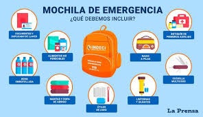
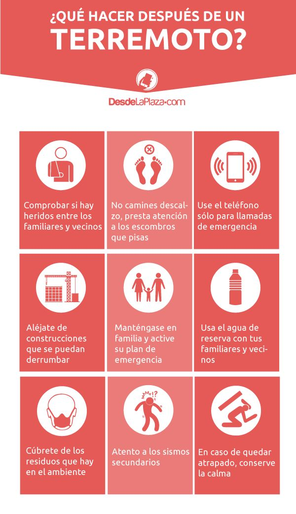
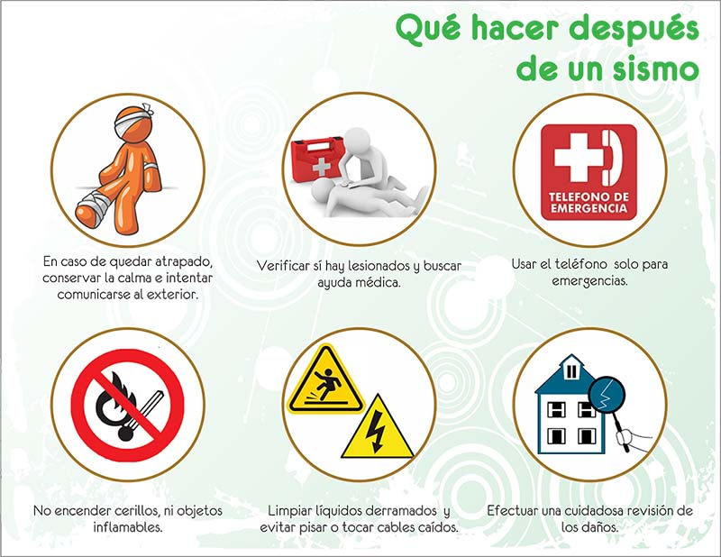

Antes del Terremoto
La preparación es clave para minimizar riesgos durante un terremoto.
Sigue estos consejos:

-
Prepara un kit de emergencia con agua, alimentos no perecederos,
linterna, radio y botiquín de primeros auxilios.
-
Fija muebles, estanterías y electrodomésticos pesados a la pared
para evitar que se caigan.
-
Identifica áreas seguras en tu hogar, como bajo mesas resistentes o
junto a muros internos.
-
Realiza simulacros de evacuación con tu familia y enseña a todos qué
hacer en caso de emergencia.
Video: Cómo Prepararte para un Terremoto
Descargar Lista de Kit de Emergencia
Durante el Terremoto
Cuando ocurre un terremoto, mantén la calma y sigue estas
instrucciones:

-
Quédate donde estás y no busques refugio bajo una mesa o escritorio.
-
Si estás afuera, aléjate de edificios, árboles y postes eléctricos.
-
Mantén las manos sobre tu cabeza para protegerla de objetos que
puedan caer.
- No uses ascensores ni corras hacia las salidas.
Video: Qué Hacer Durante un Terremoto
Después del Terremoto
Una vez que el movimiento ha cesado, sigue estos pasos para garantizar
tu seguridad:

-
Inspecciona si hay heridos y brinda primeros auxilios si es
necesario.
-
Revisa si hay fugas de gas, agua o daños estructurales en tu hogar.
-
Escucha las indicaciones de las autoridades locales por radio o
medios oficiales.
-
Estate atento a réplicas y mantén tu kit de emergencia a mano.
Video: Qué Hacer Después de un Terremoto